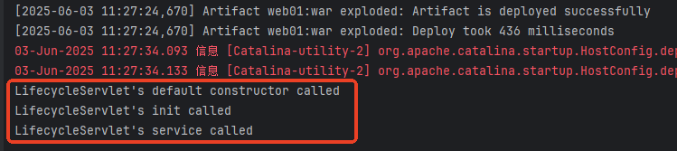
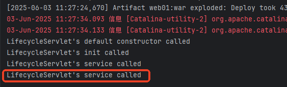
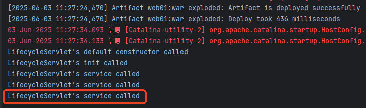
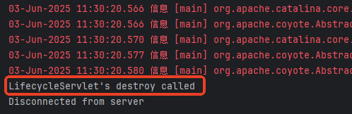
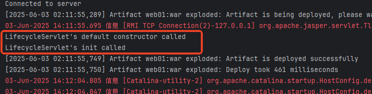

Servlet 生命周期：Servlet 对象从创建到最终被销毁的整个过程。
Servlet 生命周期的管理者：Servlet 容器，JavaWeb 程序员无权干涉。（Servlet 容器指的是 Web 服务器/Web 容器，例如 Tomcat、Jetty 等。）
也就是说，Servlet 对象的创建和该对象上方法的调用，都是由 Tomcat 服务器来负责的，我们不能通过 new 运算符来实例化 Servlet 对象，因为我们自己 new 的 Servlet 对象生命周期不受 Tomcat 服务器的管理。
可以参考上一节：servlet-with-idea，是具体的配置流程，只不过那个是web01项目，这个比较类似，是web06项目而已。
编写以下代码测试 Servlet 对象生命周期：
// web06/src/com/jkweilai/servlet/LifecycleServlet.java
package com.jkweilai.servlet;
import jakarta.servlet.*;
import java.io.IOException;
public class LifecycleServlet implements Servlet {
// 额外添加的无参构造器，不是必须的
public LifecycleServlet() {
System.out.println("LifecycleServlet's default constructor called");
}
@Override
public void init(ServletConfig servletConfig) throws ServletException {
System.out.println("LifecycleServlet's init called");
}
@Override
public void service(ServletRequest servletRequest, ServletResponse servletResponse) throws ServletException, IOException {
// 注意！tomcat的默认编码方式是平台的，比如gbk。但是idea默认是utf-8
// 建议启动的时候，手动指定标准输出流实用utf-8
// 运行的配置里面：VM-Options里面添加：-Dstdoust encoding=UTF-8
//
System.out.println("LifecycleServlet's service called");
}
@Override
public void destroy() {
System.out.println("LifecycleServlet's destroy called");
}
@Override
public String getServletInfo() {
return "";
}
@Override
public ServletConfig getServletConfig() {
return null;
}
}
配置 web.xml：
// web06/web/WEB-INF/web.xml
<servlet>
<servlet-name>lifeServlet</servlet-name>
<servlet-class>com.jkweilai.servlet.LifecycleServlet</servlet-class>
</servlet>
<servlet-mapping>
<servlet-name>lifeServlet</servlet-name>
<url-pattern>/life</url-pattern>
</servlet-mapping>
启动服务器，观察启动过程，看看在启动过程中 Servlet 无参数构造方法是否执行，然后发送第一次请求，观察控制台的输出结果，再发送第二次、第三次请求，观察控制台的输出结果，最后再关闭服务器，看控制台变化：
启动服务器发送第一次请求：

发送第二次请求：

发送第三次请求：

最后关闭 Tomcat 服务器：

# 第一次点击
LifecycleServlet's default constructor called
LifecycleServlet's init called
LifecycleServlet's service called
# 后面的每一次点击
LifecycleServlet's service called
想象一下，用户发送第一次请求的时候，底层Tomcat服务器的伪代码？
假设用户发送的请求路径：
http://localhost:8080/web06/life
Tomcat服务器获取到请求路径是：/web06/life
因此Tomcat服务器会去 web06 项目中查找 web.xml 文件
从 web.xml文件中查找到 /life 对应的Servlet全限定类名：com.jkweilai.servlet.LifecycleServlet
接下来是反射机制，调用无参数构造方法：
Class clazz = Class.forName("com.jkweilai.servlet.LifecycleServlet");
// 在这个位置调用了无参数的构造方法。
Servlet servlet = (Servlet)clazz.newInstance();
// Tomcat服务器负责创建ServletConfig对象。
ServletConfig servletConfig = new ......();
// 调用了构造方法会继续调用servlet对象的init方法
servlet.init(servletConfig);
// Tomcat服务器将request对象创建出来。
ServletRequest request = new ......();
// Tomcat服务器将response对象创建出来。
ServletResponse response = new ......();
// 调用servlet对象的service方法处理请求
servlet.service(request, response);
想象一下，用户发送第二次请求的时候，底层Tomcat服务器的伪代码？
假设用户发送的请求路径：
http://localhost:8080/web06/life
处理流程：
1. Tomcat服务器获取到请求路径：/web06/life
2. Tomcat服务器定位到 web06 项目
3. Tomcat服务器根据 /life 请求路径，在整个web容器中搜索对应的Servlet实例
4. 结果：找到了该Servlet对象（已存在于容器缓存中）
5. 直接调用Servlet对象的 service() 方法处理请求，无需重新实例化和初始化
---
底层存储结构（Map集合）：
key（请求路径） value（Servlet实例）
------------------- -------------------
/life servlet对象内存地址（例如：com.jkweilai.servlet.LifecycleServlet@3f8f9dd3）
说明：
- 第一次请求时，Tomcat会通过反射创建Servlet实例，并存入该Map
- 第二次及后续请求，Tomcat直接从Map中获取已存在的Servlet实例
- 这就是Servlet单例多线程模式的底层实现基础
init 方法init 方法只会被调用一次，在 Servlet 对象实例化完成后立即被调用，主要负责 Servlet 初始化工作。
也就是说，如果你希望在 Servlet 对象创建时执行一些操作，可以将代码写到 init 方法中。例如：解析 xml 文件、初始化连接池等耗时以及要求执行一次的操作。
思考：既然是这样，我们能否使用无参数构造方法来替代 init 方法呢？不能，Servlet 规范中规定，JavaWeb 程序员不应该在 Servlet 类中提供任何构造方法，因为这种行为可能会导致 Servlet 对象无法实例化。
怎么理解？为什么可能会导致无法实例化？实际上，创建 Servlet 对象是通过反射机制完成的，例如代码：
Class clazz = Class.forName("com.jkweilai.servlet.LifecycleServlet");
Servlet servlet = (Servlet)clazz.newInstance();
大家应该知道，newInstance()方法底层调用的是无参数构造方法，如果程序员在 Servlet 类中提供构造方法的话，可能会导致无参数构造方法丢失，从而影响 Servlet 对象的实例化。因此官方不建议将代码写到构造方法中，如果你需要在创建对象的时间点上执行代码的话，请将其编写到 init 方法中。
另外 init 方法上有一个参数 ServletConfig，这个对象表示 Servlet 配置信息对象，该对象也是由 Tomcat 服务器来创建的，Tomcat 服务器将它创建好之后调用 init 方法，并且将 ServletConfig 作为 init 方法的参数传给了我们，我们可以直接使用。关于 ServletConfig的使用，后面再介绍。
service 方法service 方法是最重要最核心的一个方法。用户只要发送一次请求，service 方法就会被调用一次。
该方法上有两个非常重要的参数：
request 和 response 两个对象也不需要我们自己 new，Tomcat 服务器已经为我们创建好了，我们直接在 service 方法体中使用即可。
destroy 方法destroy 方法只会被调用一次，该方法没有任何参数。该方法被调用时 Servlet 对象还没有被销毁，只是即将被销毁。
如果你希望在对象被销毁的时候执行一次特殊的操作，例如释放连接池，可以将代码编写到 destroy 方法中。
默认情况下，Web 服务器启动时，并不会去实例化 Servlet 对象，这样可以减少内存的开销。如果想在服务器启动阶段就实例化 Servlet，可以给 Servlet 添加 <load-on-startup>配置，值越小，实例化的优先级越高。例如：
<servlet>
<servlet-name>lifeServlet</servlet-name>
<servlet-class>com.jkweilai.servlet.LifecycleServlet</servlet-class>
<!--值越小优先级越高-->
<load-on-startup>1</load-on-startup>
</servlet>
<servlet-mapping>
<servlet-name>lifeServlet</servlet-name>
<url-pattern>/life</url-pattern>
</servlet-mapping>
启动服务器，查看控制台输出：

可以看到，服务器启动的时候会调用 LifecycleServlet的无参数构造方法，完成 Servlet 对象的实例化。
load-on-startup如果想要tomcat一开机就自动new，需要<load-on-startup>标签，里面的数字越小，越先夹在
比如：
<!--servlet配置信息-->
<servlet>
<servlet-name>AServlet</servlet-name>
<servlet-class>com.jkweilai.servlet.AServlet</servlet-class>
<load-on-startup>1</load-on-startup>
</servlet>
<servlet>
<servlet-name>BServlet</servlet-name>
<servlet-class>com.jkweilai.servlet.BServlet</servlet-class>
<load-on-startup>2</load-on-startup>
</servlet>
就是先加载B，再加载A。